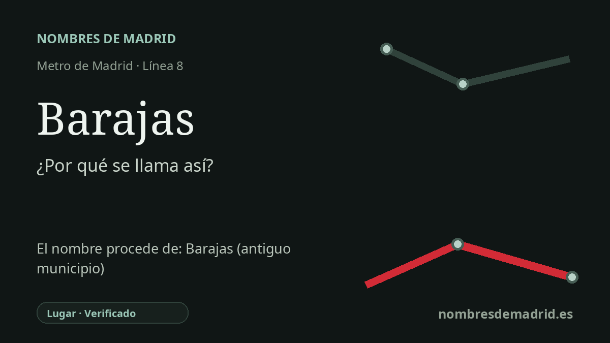

Publicado el · Investigación de Nombres de Madrid · Cómo verificamos cada origen · 8 fuentes consultadas
Respuesta rápida
La estación de Barajas toma su nombre de la histórica villa y antiguo municipio de Barajas, anexionado a Madrid por decreto de 1949 y hoy distrito. El origen antiguo del topónimo tiene varias explicaciones, y la célebre historia de Bar Axa es una etimología popular, no un origen probado.
La historia del nombre
La estación de Barajas toma su nombre público del lugar donde se encuentra: Barajas, hoy uno de los distritos de Madrid y, antes, una villa situada en el acceso nororiental de la ciudad. La Comunidad de Madrid describe la estación junto a la avenida de Logroño y la plaza de Pajarones, en el ámbito de Barajas, y la prolongación de la línea 8 se construyó para conectar el aeropuerto y el antiguo pueblo con la red de Metro.
Antes de ser distrito madrileño, Barajas fue municipio independiente. El decreto fechado el 18 de noviembre de 1949 aprobó la anexión total de su término municipal al de Madrid, y la organización municipal posterior integró el área en Hortaleza hasta que la reestructuración de 1987 creó el actual distrito de Barajas. Esa historia administrativa es la explicación segura del nombre de la estación: la parada conserva el nombre del antiguo municipio.
El significado antiguo de la palabra Barajas es mucho menos seguro. La recopilación impresa por Juan Ortega Rubio de las Relaciones Topográficas recoge la respuesta local de 1579 según la cual el lugar se habría llamado primero Baraja y, en tiempo de los moros, habría sido señor de él un moro llamado Baraxa, hijo de Axa. Ese dato es valioso como testimonio de una creencia local de finales del siglo XVI, pero no prueba documentalmente que existiera tal personaje ni que el nombre proceda realmente de elementos árabes o hebreos.
La investigación toponímica moderna es más prudente. Joaquín Caridad Arias sostiene que la explicación de Bar Axa carece de constancia histórica como antropónimo o personaje y debe entenderse mejor como etimología popular. También revisa la interpretación latina varalia, 'seto de travesaños' o estructura de varales, vinculada a Menéndez Pidal y repetida por autores posteriores, pero duda de que una explicación romance pueda explicar toda la familia de nombres semejantes dentro y fuera de la Península Ibérica.
La interpretación mejor respaldada es por capas: la estación se llama así con certeza por el lugar de Barajas; Barajas es con seguridad el antiguo municipio incorporado a Madrid; y el origen remoto del topónimo sigue discutido. La línea académica mejor defendida apunta hacia un origen prerromano, quizá relacionado con antiguos nombres personales, divinos, gentilicios o de lugar, mientras que la historia de Bar Axa es una tradición antigua y llamativa, no un hecho demostrado.